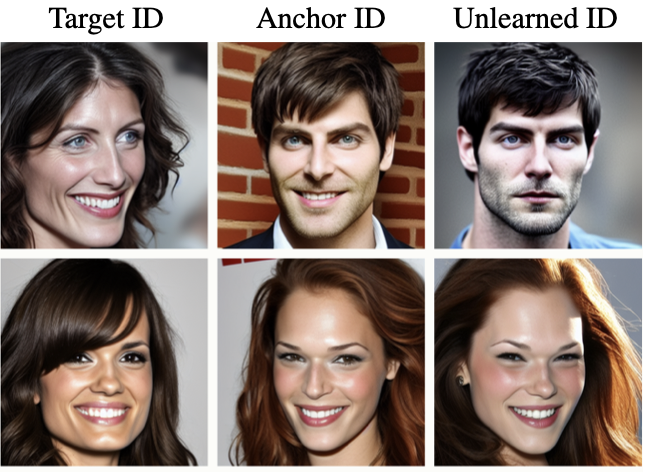
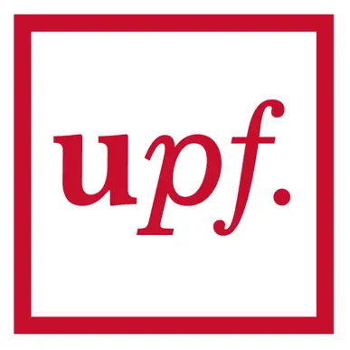
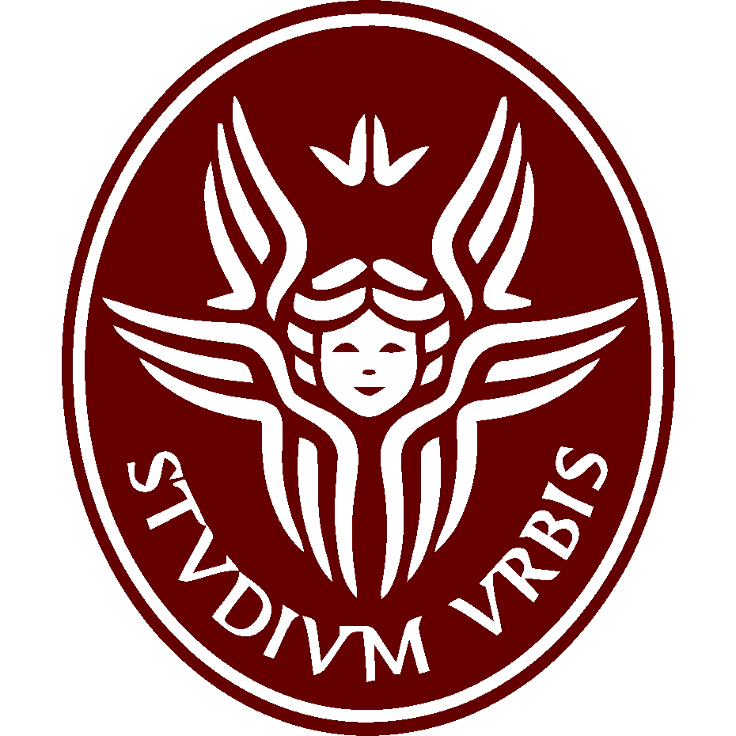

Thesis Work · 2026
Token Grounding in Vision-Language-Action Models
Language-conditioned queries score the native X-VLA image-token grid to expose which regions matter for the current manipulation step.
Interested in robotic control (VLA, world models), multimodal reasoning, and representation alignment.
Thesis Work · 2026
Language-conditioned queries score the native X-VLA image-token grid to expose which regions matter for the current manipulation step.
Thesis Work · 2026
Recover expert perceptual structure from X-VLA representations such as DINOv2-like tokens or CeDiRNet-aligned maps to can support action-generation via explicit guidance or representation alignment.

Accepted at IJCB · 2026
Targeted identity unlearning for ID-conditioned diffusion models, aiming to forget requested identity information while preserving generation quality.
Computer Vision Laboratory, University of Ljubljana
View arXiv2024 - 2026
Erasmus Mundus Joint Master in Artificial Intelligence
Specialisation in Data Science at the University of Ljubljana.

Universitat Pompeu Fabra -
Barcelona
2024

Sapienza Università di Roma
2025
University of Ljubljana
2025-2026
Research‑focused Erasmus Mundus programme integrating machine learning and modern AI across leading European universities.
2021 - 2024
Tecnologico de Monterrey
January 2024 - February 2024
Kavraki Lab, Rice University
• Designed and implemented a ROS system for integrating motion
planning and Samsung Labs’ SceneGrasp for multi-object 3D reconstruction and grasp pose
estimation of robotic manipulators using RGB-D data.
• Developed a ROS package for pick-and-place using ArUco markers; validated in simulation and
on hardware.
March 2022 - October 2023
Steelcase
• Developed and implemented automation solutions for business
processes for internal clients.
• Utilized Agile methodology and technologies such as UiPath RPA, Excel VBA, Power Automate,
and Python.
PyTorch
Hugging Face
ROS
Docker

W&B
AWS
Google Cloud